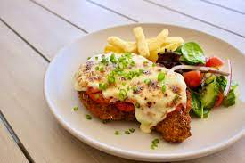

Parmi or Parma

Parmi or Parma is what chicken parmigana is called in Australia. It is a staple
in almost every pub down under. This italian staple has been given a unique Australian twist.
In Vicoria and other north Australian parts it is referred to as Parmi but
in other parts of the country the name Parma is more commonly used.
Ingredients
- Raw chicken breast
- Any type of cooking oil
- Cheese
- Frozen fries
- Marinara Sauce
- Breadcrumbs
- Flour
- Raw eggs
- Pilsner beer
Steps
- Mix breadcrumbs in a bowl with beer and flour to create a batter.
- Flatten the raw chicken breast by beating it repeatdely with a heavy object.
- Break and mix raw eggs in a bowl.
- Dip the chicken breast in batter and then eggs and fry it till it's light brown.
- Then cook our frozen fries until they are golden brown in the same oil.
- Now take our cooked chicken breast and put 1-2 slices of cheese on it and the pour sauce on top.
- Put it in a oven and let it bake on medium temperature until the cheese has properly melted.
- Your Parma or Parmi whatever you prefer to call it is ready.